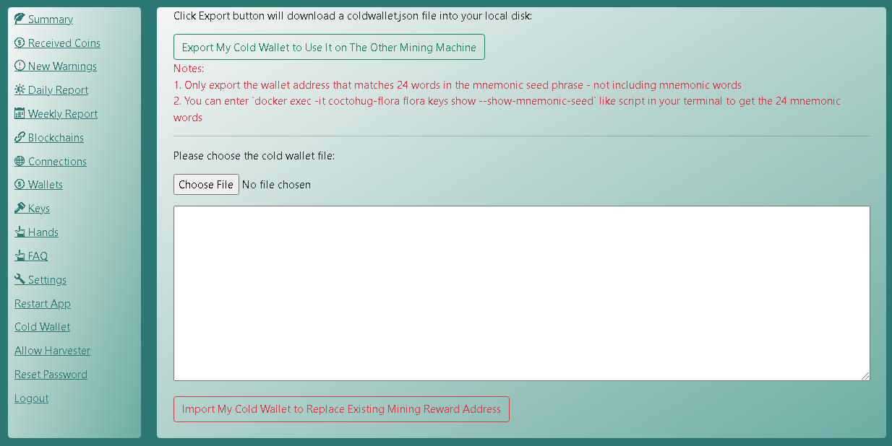

Coctohug - Manage dozens of chia blockchain forks mining from a web browser!
- Nice localization with support of dozens of languages: English, العربية, Bulgarian, Catalan, Deutsch, Español, زبان فارسی, Français, Galego, Indonesian, Italiano, 日本語, 한국어, Português do Brasil, limba română, Русский, Serbian, Thai, Tagalog (Filipino), Türkçe, Українська, Vietnamese, 简体中文, 繁體中文
Easy Setup using Quick Start & ccm
Seek more help on our Website / Github / Discussions / Discord.
Quick Start
Common Settings
Advanced Settings
Best Practices
Setup Coctohug on Linux OS
Setup Coctohug on Windows OS
Setup Coctohug on Mac OS
Password
- You will be prompt to set a password for secure settings, when you first time access WebUI with url http://localhost:12630/
- Secure settings include: Cold Wallet, Coin Transfer, Restart Blockchain Forks, Harvester...
Keys
- You will be prompt to enter the 24 mnemonic words, when you first time access WebUI with url - this is mainly for farming purpose
- Or you can generate one totally new key - this is mainly for cold wallet purpose
Mining
- Once node sync is done, farming should start automatically
- Then you will be able to monitor the mining status with various ways

Monitoring
- Summary tab can show: Total Mined Coins, Account Balance, Plot Count, Plot Size, Netspace Size and Expected Time to Win
- each blockchain fork-panel in Summary tab will have a light green background if it is working fine, otherwise it will be light yellow background
- You can also examine detail using other tabs
NFT Recovery
Blocks Found / Coins Received
- List total blocks found
- List total coins received

Mining Warnings
- List possible network issue
- List possible signapoint issue
- List possible disk search issue
- List possible plot count decreasing issue
Daily Report
- Summarize Blocks Found / Coins Received by day
- Summarize Mining Warnings by day

Weekly Report
- Summarize Blocks Found / Coins Received by week
- Summarize Mining Warnings by week
Node Sync
Connections Management
- List all node connections
- You can add/remove connections in Connections tab

Wallets Management
- List wallet status and account balance
- You can also transfer coins in wallet tab

Hands Management
- This is each blockchain fork workers
- You may remove one hand when you don't plan to farm it anymore
Transfer Coins
- Go to wallet tab and enter your secure password to transfer coins
Cold Wallet
- Go to settings tab with your secure password
- Export Cold Wallet Account
1. Prepare a new machine(different with mining machine)
2. Visit https://www.coctohug.xyz and click Wallet Mode to generate docker-compose folders
3. Setup the docker-compose folders [Setup Coctohug on Linux OS]
4. On WebUI launch screen, generate a new key this time
5. Wait few minutes for blockchain forks restarting
6. Visit http://localhost:12630/, and go to settings - cold wallet tab to export the cold wallet addresses
7. Confirm each address is correct manually by comparing the downloaded file with information shown on Keys tab
8. Get 24 mnemonic words by similar terminal script
docker exec -it coctohug-flora flora keys show --show-mnemonic-seed
docker exec -it coctohug-covid covid keys show --show-mnemonic-seed
docker exec -it coctohug-lucky lucky keys show --show-mnemonic-seed
- Import Cold Wallet Account
1. On your mining machine, visit settings - cold wallet tab
2. Import the previous downloaded cold wallet(recommended on different machine) json file
3. Wait few minutes, and go to wallet tab to see whether the cold wallet address is updated or not
4. Note 1: we recommend backup your wallet configurations before importing
5. Note 2: Only working blockchain forks can import cold wallet. Please check whether there are stopped blockchain forks or not before doing this. Surely you can also import later again when they are re-started
6. Note 3: If there are any issues, you may need restart all blockchain forks:
ccm restart all
ccm restart ethgreen

Secure Passphrased 24 Mnemonic Words
- coctohug-passphrase can be used to secure your 24 mnemonic words
- It encrypt your keys with a password only you know
- You can decrypt it with the password when adding new blockchain forks
Blockchain Forks
- Check coctohug github every fews days
- New blockchain forks will be supported very soon
Harvester
Upgrade
- This needs the 24 mnemonic words again. Please put them into file /home/user/.coctohug/mnc.txt. After all new docker containers started, you can then empty the file mnc.txt to enhance your security level
- One line script
ccm upgrade all && ccm start all
- You can also execute above scripts step by step
ccm upgrade all
ccm start all
- In case of incompatible db issue, you can remove the existing database file before executing docker-compose start script by
rm -f ~/.coctohug-web/db/coctohug.sqlite
Local Language
- On top right of WebUI, choose whatever language you like most
- You can switch to any other languages later if you wish
Hardware Requirements
- Once synchronized, 10th Generation Intel® Core™ i7 Processors should be enough for farming 50+ blockchain forks
- However for the intial node syncing stage, it really eats CPU. So we recommend setup 5 blockchain forks per group, and start group by group
- Memory needed equals to: number of mining blockchain forks multiply 1.8G RAM
- Normal disk should be fine for 50+ blockchain forks
Open Source Projects on Github
Trademark Notice
CHIA NETWORK INC, CHIA™, the CHIA BLOCKCHAIN™, the CHIA PROTOCOL™, CHIALISP™ and the “leaf Logo” (including the leaf logo alone when it refers to or indicates Chia), are trademarks or registered trademarks of Chia Network, Inc., a Delaware corporation. There is no affliation between this Coctohug project and the main Chia Network project.